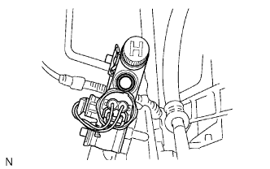
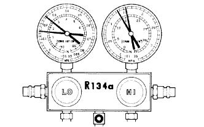

GA ĐIỀU HOÀ > KIỂM TRA TRÊN XE |
| 1. KIỂM TRA LƯỢNG GA |
|  |
Kiểm tra kính quan sát trên cụm ống dẫn ga lỏng.
Các điều kiện kiểm tra:
| Hạng mục | Triệu chứng | Lượng ga điều hoà | Quy trình hiệu chỉnh |
| 1 | Bóng khí xuất hiện | Không đủ* | (1) Kiểm tra rò rỉ ga điều hoà và sửa chữa nếu cần (2) Bổ sung ga điều hoà cho đến khi bọt biến mất |
| 2 | Không có bọt | Hết, không đủ hoặc quá nhiều | Tham khảo các mục 3 và 4 |
| 3 | Không có sự chênh lệch nhiệt độ giữa đầu ra và đầu vào của máy nén | Hết ga hoặc gần hết | (1) Kiểm tra rò rỉ ga điều hoà bằng bộ phát hiện rò ga và sửa chữa nếu cần (2) Bổ sung ga điều hoà cho đến khi bọt biến mất |
| 4 | Có chênh lệch nhiệt độ đáng kể giữa đầu vào và đầu ra của máy nén | Đúng hoặc quá nhiều | Tham khảo các mục 5 và 6 |
| 5 | Ngay sau khi tắt điều hoà OFF, ga trở nên trong. | Quá nhiều | (1) Xả và nạp lại ga điều hoà (2) Xả khí và cấp đủ lượng ga sạch |
| 6 | Ngay sau khi tắt điều hoà OFF, ga sẽ tạo bọt và sau đó trở nên trong. | Đúng | - |
| 2. KIỂM TRA ÁP SUẤT GA ĐIỀU HOÀ BẰNG BỘ ĐỒNG HỒ CHÂN KHÔNG |
Dùng phương pháp này để xác định khu vực hư hỏng bằng cách dùng bộ đồng hồ đo áp suất. Hãy đọc giá trị áp suất khi các điều kiện sau đã được thảo mãn:
|  |
Kiểm tra giá trị đọc trên đồng hồ khi lượng ga điều hoà là bình thường.
| Phía cao áp | Lượng ga điều hoà |
| Thấp | 0.15 đến 0.25 MPa (1.5 đến 2.5 kgf*cm) |
| Cao | 1.37 đến 1.57 (14 đến 16 kgf*cm) |
Hệ thống A/C thay đổi định kỳ giữa bình thường và chức năng không bình thường do có hơi nước trong hệ thống lạnh.
| Triệu chứng | Nguyên nhân có thể | Chẩn đoán | Thực hiện hiệu chỉnh |
| Trong khi hoạt động, chu kỳ áp suất bên phía thấp áp là giữa bình thường và chân không. | Hơi nước trong hệ thống làm lạnh do sự đông lạnh tại lỗ van giãn nở ( gây nên sự ngừng hoạt động tạm thời của chu kỳ lạnh) nhưng sau đonó tan ra (phục hồi lại tình trạng bình thường) |
|
|
Hệ thống điều hoà không hoạt động đúng chức năng là do làm mát không đủ.
| Triệu chứng | Nguyên nhân có thể | Chẩn đoán | Thực hiện hiệu chỉnh |
| Rò rỉ ga trong hệ thống ga lạnh |
|
|
Hệ thống điều hoà không hoạt động đúng chức năng là do tuần hoàn ga kém.
| Triệu chứng | Nguyên nhân có thể | Chẩn đoán | Thực hiện hiệu chỉnh |
| Bẩn trong bình chứa sẽ làm tắc dòng ga điều hoà. | Giàn nóng bị tắc | Thay thế giàn nóng |
Hệ thống điều hoà không hoạt động đúng chức năng hoặc hoạt động chập chờn là do ga điều hoà không tuần hoàn.
| Triệu chứng | Nguyên nhân có thể | Chẩn đoán | Thực hiện hiệu chỉnh |
|
| Ga không tuần hoàn |
|
Hệ thống điều hoà không hoạt động đúng chức năng là do ga điều hoà quá nhiều hoặc làm mát không đủ.
| Triệu chứng | Nguyên nhân có thể | Chẩn đoán | Thực hiện hiệu chỉnh |
| Áp suất quá cao ở cả hai phía thấp áp và cao áp |
|
|
|
Hệ thống điều hoà không hoạt động đúng chức năng là do có khí trong hệ thống.
| Triệu chứng | Nguyên nhân có thể | Chẩn đoán | Thực hiện hiệu chỉnh |
| Có khí trong hệ thống ga điều hoà |
|
|
Hệ thống điều hoà không hoạt động đúng chức năng là do hỏng van giãn nở.
| Triệu chứng | Nguyên nhân có thể | Chẩn đoán | Thực hiện hiệu chỉnh |
| Khắc phục hư hỏng trong van giãn nở |
| Thay thế van giãn nở |
Hệ thống điều hoà không hoạt động đúng chức năng là do máy nén bị hỏng.
| Triệu chứng | Nguyên nhân có thể | Chẩn đoán | Thực hiện hiệu chỉnh |
| Rò rỉ bên trong máy nén |
| Sửa chữa hoặc thay máy nén |